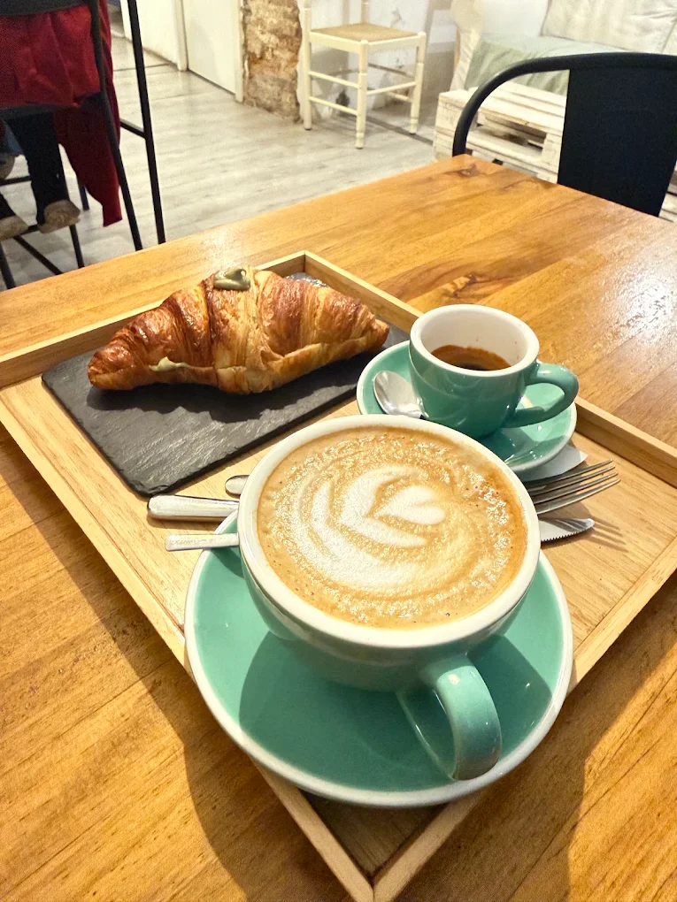
01
C. Victoria, 20 · Málaga centro
Café, té, desayunos y una despensa a granel con carácter propio.
Café, desayuno y algo rico. Sin prisas.
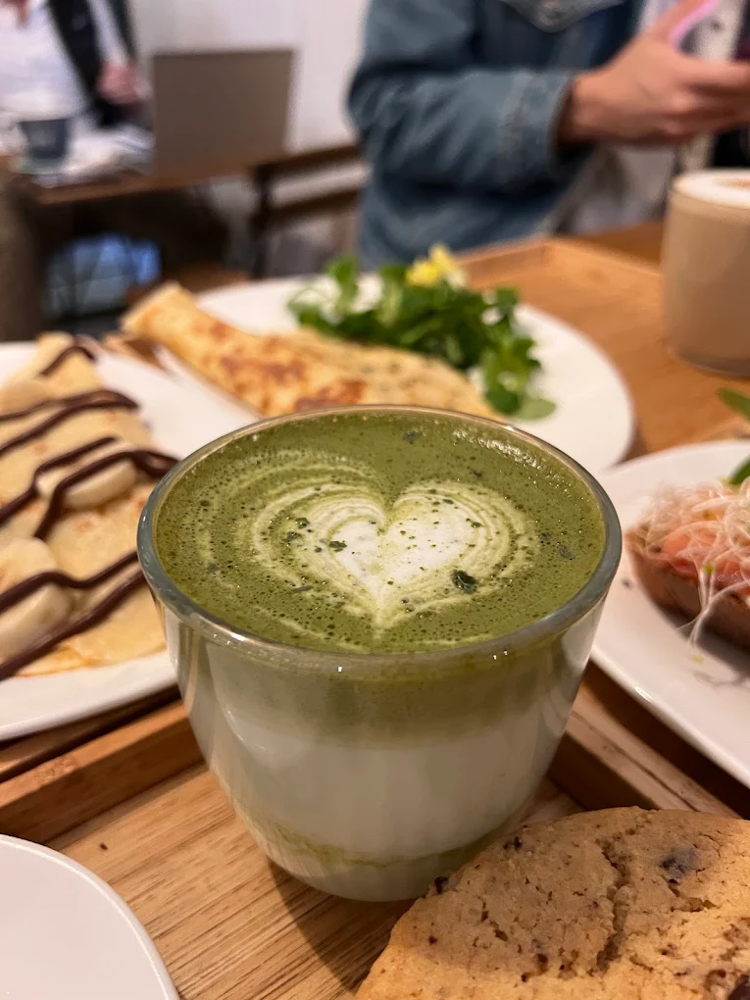
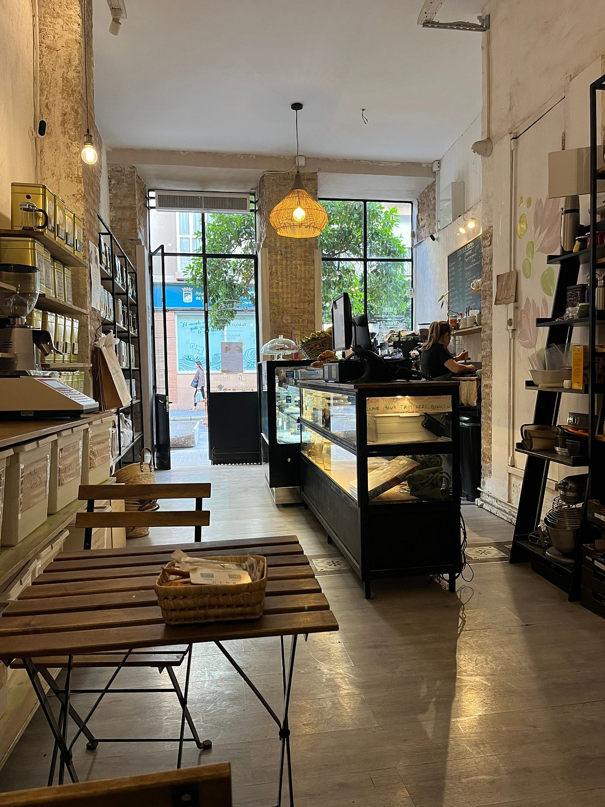
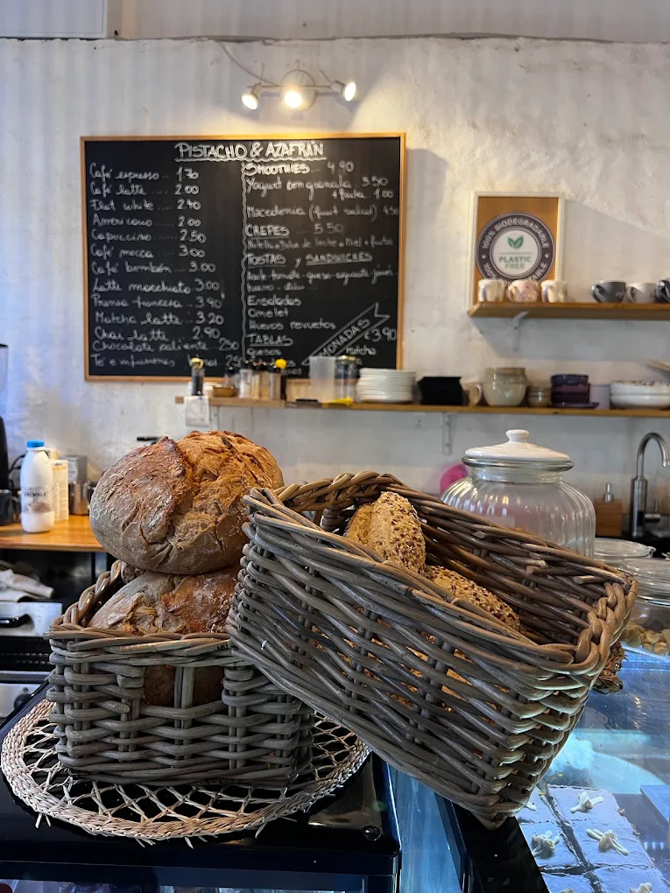
Una mezcla poco convencional
Un sitio para desayunar, tomar café o té, elegir algo dulce o salado y seguir curioseando entre productos a granel y especias. Todo en la misma pausa.
Descubre nuestra otra mitadPara cada antojo
02 / 06

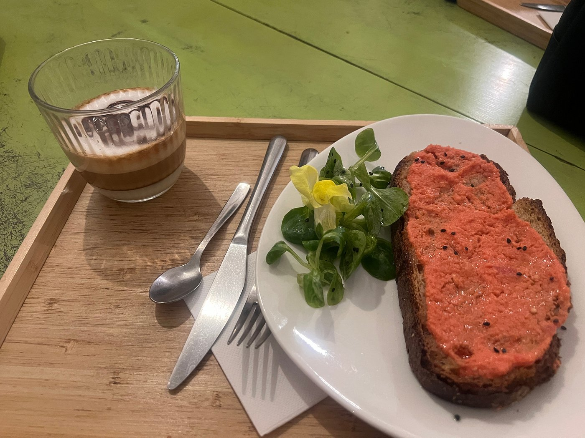
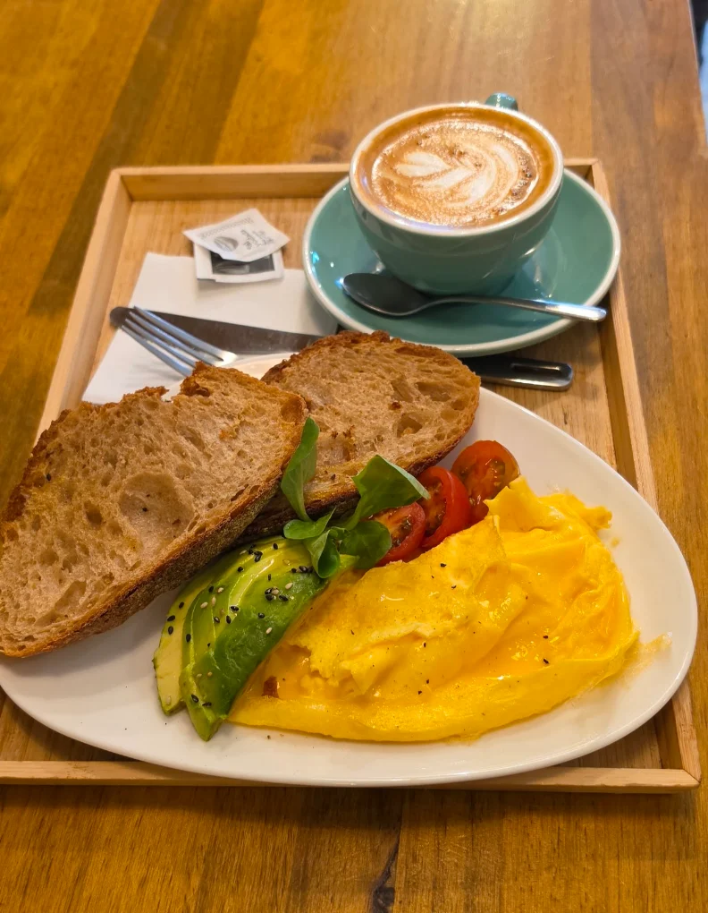
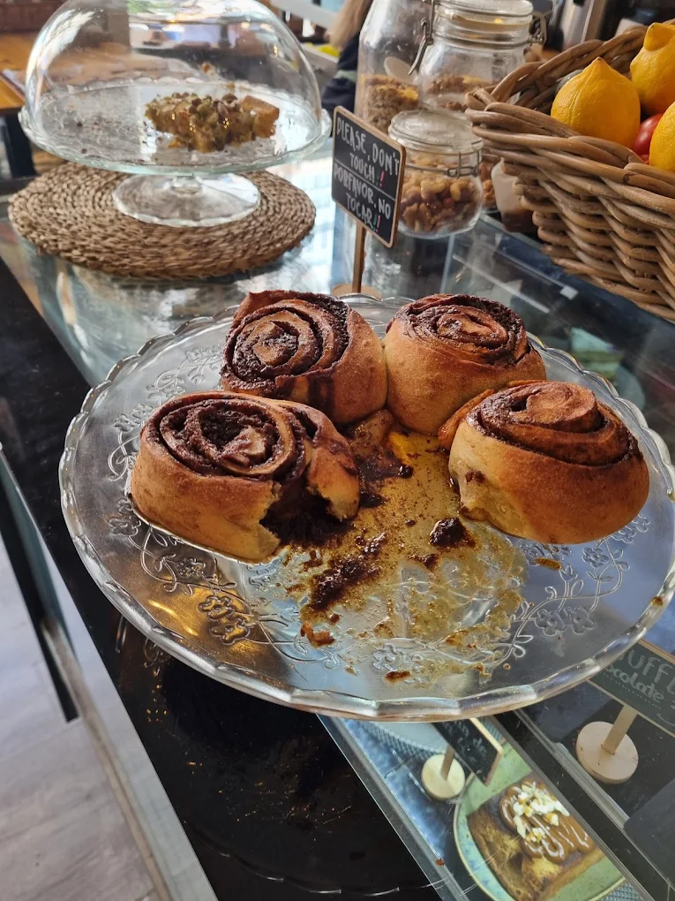
Para llevar a casa
Además de café y desayunos, encontrarás productos a granel y especias: otra forma de saborear Pistacho y Azafrán cuando sales por la puerta.
Cómo llegar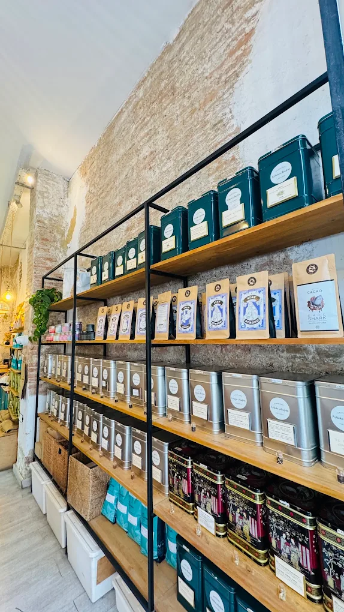
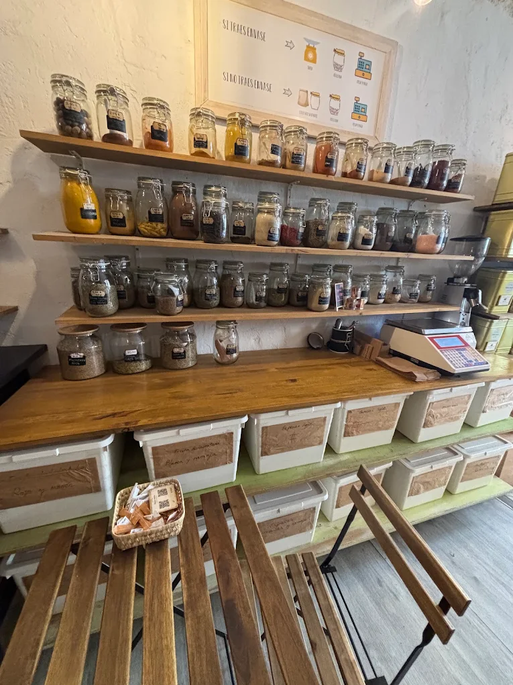
El espacio
Una mesa para desayunar, una bebida a media mañana o una conversación sin mirar el reloj. Estamos en Calle Victoria, muy cerca de Plaza de la Merced.
Calle Victoria → Plaza de la Merced
Dentro de Pistacho y Azafrán
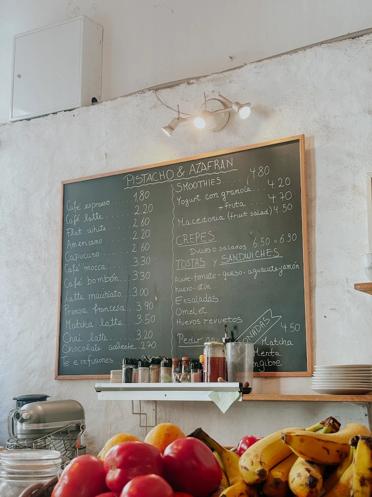
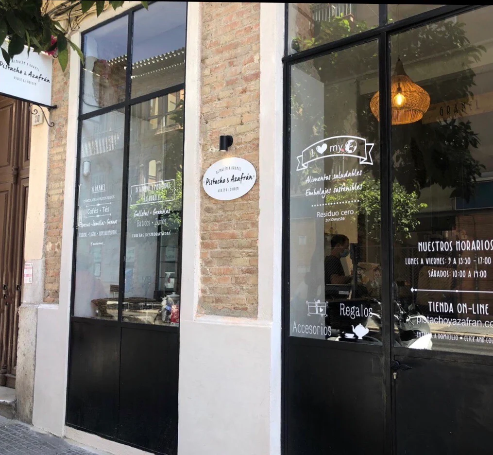
Opiniones reales
Consulta las reseñas publicadas por clientes en Google: impresiones sobre las bebidas, la repostería, el ambiente y el trato.
Ver opiniones en GoogleGoogle
Opiniones verificables
Nos vemos en Málaga